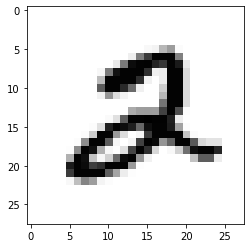
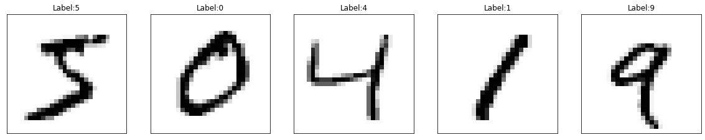
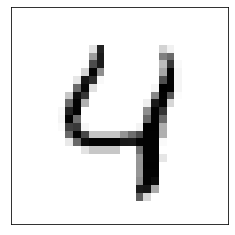
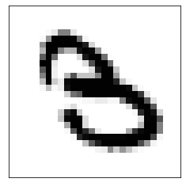

Building an image recognition neural network#
import numpy as np
import pandas as pd
import matplotlib.pyplot as plt
from tensorflow import keras
# Setting random seeds to get reproducible results
np.random.seed(0)
import tensorflow as tf
tf.random.set_seed(1)
Importing and reading the dataset#
(x_train, y_train), (x_test, y_test) = keras.datasets.mnist.load_data()
print("Size of the training set", len(x_train))
print("Size of the testing set", len(x_test))
Size of the training set 60000
Size of the testing set 10000
plt.imshow(x_train[5], cmap='Greys')
print("The label is", y_train[5])
The label is 2

fig = plt.figure(figsize=(20,20))
for i in range(5):
ax = fig.add_subplot(1, 5, i+1, xticks=[], yticks=[])
ax.imshow(x_train[i], cmap='Greys')
ax.set_title('Label:' + str(y_train[i]))

Pre-processing the data#
# Reshaping the features.
# In the reshape function we use the -1 as a placeholder for the size of the dataset.
x_train_reshaped = x_train.reshape(-1, 28*28)
x_test_reshaped = x_test.reshape(-1, 28*28)
from tensorflow.keras.utils import to_categorical
y_train_cat = to_categorical(y_train, 10)
y_test_cat = to_categorical(y_test, 10)
Building and training the neural network#
# Imports
#import numpy as np
from tensorflow.keras.models import Sequential
from tensorflow.keras.layers import Dense, Dropout
#from tensorflow.keras.layers import Dense, Dropout, Activation
#from tensorflow.keras.optimizers import SGD
# Building the model
model = Sequential()
model.add(Dense(128, activation='relu', input_shape=(28*28,)))
model.add(Dropout(.2))
model.add(Dense(64, activation='relu'))
model.add(Dropout(.2))
model.add(Dense(10, activation='softmax'))
# Compiling the model
model.compile(loss = 'categorical_crossentropy', optimizer='adam', metrics=['accuracy'])
model.summary()
Model: "sequential_3"
_________________________________________________________________
Layer (type) Output Shape Param #
=================================================================
dense_9 (Dense) (None, 128) 100480
_________________________________________________________________
dropout_6 (Dropout) (None, 128) 0
_________________________________________________________________
dense_10 (Dense) (None, 64) 8256
_________________________________________________________________
dropout_7 (Dropout) (None, 64) 0
_________________________________________________________________
dense_11 (Dense) (None, 10) 650
=================================================================
Total params: 109,386
Trainable params: 109,386
Non-trainable params: 0
_________________________________________________________________
model.fit(x_train_reshaped, y_train_cat, epochs=10, batch_size=10)
Epoch 1/10
6000/6000 [==============================] - 12s 2ms/step - loss: 2.0735 - accuracy: 0.7010 1s - loss: 2.2
Epoch 2/10
6000/6000 [==============================] - 12s 2ms/step - loss: 0.5679 - accuracy: 0.8475
Epoch 3/10
6000/6000 [==============================] - 10s 2ms/step - loss: 0.4456 - accuracy: 0.8844
Epoch 4/10
6000/6000 [==============================] - 14s 2ms/step - loss: 0.3982 - accuracy: 0.8983
Epoch 5/10
6000/6000 [==============================] - 16s 3ms/step - loss: 0.3768 - accuracy: 0.9037
Epoch 6/10
6000/6000 [==============================] - 13s 2ms/step - loss: 0.3739 - accuracy: 0.9053
Epoch 7/10
6000/6000 [==============================] - 13s 2ms/step - loss: 0.3538 - accuracy: 0.9112
Epoch 8/10
6000/6000 [==============================] - 17s 3ms/step - loss: 0.3565 - accuracy: 0.9112
Epoch 9/10
6000/6000 [==============================] - 19s 3ms/step - loss: 0.3520 - accuracy: 0.9123
Epoch 10/10
6000/6000 [==============================] - 18s 3ms/step - loss: 0.3362 - accuracy: 0.9164
<tensorflow.python.keras.callbacks.History at 0x64072b8d0>
Making predictions#
predictions_vector = model.predict(x_test_reshaped)
predictions = [np.argmax(pred) for pred in predictions_vector]
plt.imshow(x_test[4], cmap='Greys')
plt.xticks([])
plt.yticks([])
print("The label is", y_test[4])
print("The prediction is", predictions[4])
The label is 4
The prediction is 4

Sometimes the model makes mistakes too.
plt.imshow(x_test[18], cmap='Greys')
plt.xticks([])
plt.yticks([])
print("The label is", y_test[18])
print("The prediction is", predictions[18])
The label is 3
The prediction is 8

Finding the accuracy of the model on the test set#
num_correct = 0
for i in range(len(predictions)):
if predictions[i] == y_test[i]:
num_correct += 1
print("The model is correct", num_correct, "times out of", len(y_test))
print("The accuracy is", num_correct/len(y_test))
The model is correct 9420 times out of 10000
The accuracy is 0.942